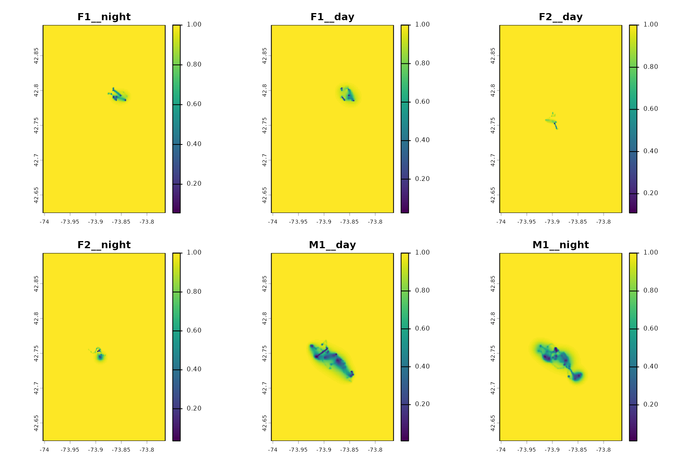

Producing one UD per behavioural state (day/night, season, etc.)
Source:vignettes/UD_bursted_uds.Rmd
UD_bursted_uds.RmdSometimes you don’t want one UD per animal — you want one UD per context: this bird’s daytime UD vs. its nighttime UD, this animal’s summer range vs. its winter range, this seal’s foraging UD vs. its haul-out UD. The pattern: you have a category that varies within one track, and you want a separate UD for each category, stacked together on a common grid so they’re directly comparable.
This vignette shows two ways to do that with
mt_dbbmm_ud() and mt_dbgb_ud(). The first uses
the existing multi-track dispatch (by attaching the context to the track
ID); the second uses split() + lapply when
each context needs different settings.
(If you used the legacy move package’s
MoveBurst class, this is the move2 equivalent.
move2 deliberately doesn’t reproduce MoveBurst
— context belongs on the tibble as a column, and the per-context
workflow is expressible directly with dplyr and the
package’s normal multi-track dispatch. The result is the same kind of
stacked UD output you’d get from DBBMMBurstStack.)
Two idioms
A. Composite track_id
Make the context part of the track identifier. The existing
multi-track dispatch of mt_dbbmm_ud() /
mt_dbgb_ud() then does exactly what MoveBurst
used to do: one UD per composite label, stacked on a common grid.
Setting the scene
library(move2)
library(dplyr)
library(sf)
library(terra)
library(move2utils)
fishers <- mt_read(mt_example())
fishers <- fishers[!st_is_empty(fishers), ]
## three individuals with enough data for a reasonable per-burst UD
ids <- c("F1", "F2", "M1")
focal <- filter_track_data(fishers, .track_id = ids)
focal <- focal |> dplyr::group_by(mt_track_id(focal)) |> slice(1:500) |> ungroup()
## any CRS works: the UD functions auto-project and return in the input
## CRS, so we keep this lon/lat track as isAttaching a per-location context column
The simplest contexts are per-location (length n):
derived from the timestamp (hour-of-day, season), from an environmental
annotation (habitat class), or from a downstream classifier (HMM state).
Attach them as columns.
focal <- focal |>
dplyr::mutate(
hour = as.integer(format(mt_time(focal), "%H")),
day_night = factor(
dplyr::if_else(hour >= 6 & hour < 18, "day", "night"),
levels = c("day", "night")
)
)
table(focal$day_night, mt_track_id(focal))
#>
#> F1 F2 F3 M1 M2 M3 M4 M5
#> day 248 181 0 239 0 0 0 0
#> night 252 319 0 261 0 0 0 0For per-segment contexts (length n-1),
align them to the starting location of each segment and
pad the final location with NA or with the last segment’s
label — whichever matches your intent.
Idiom A — composite track_id
Build a composite label and set it as the track identifier. Existing multi-track dispatch handles the rest.
focal_burst <- focal |>
dplyr::mutate(
burst_id = paste(mt_track_id(focal), day_night, sep = "__")
)
focal_burst <- mt_set_track_id(focal_burst, "burst_id")
table(mt_track_id(focal_burst))
#>
#> F1__day F1__night F2__day F2__night M1__day M1__night
#> 248 252 181 319 239 261A dBBMM UD per (individual, day/night) pair
mt_dbbmm_variance() accepts a multi-track
move2 object and returns a named list of variance objects.
mt_dbbmm_ud() on that list rasters each UD on a common grid
computed from the combined extent, so the layers are directly
comparable.
var_list <- mt_dbbmm_variance(
focal_burst,
location_error = 25,
window_size = 31,
margin = 11
)
#> Input is in longitude/latitude. Auto-projecting to a local AEQD CRS for dynamic Brownian-bridge variance estimation; distances and variances are in metres.
length(var_list)
#> [1] 6
names(var_list)
#> [1] "F1__night" "F1__day" "F2__day" "F2__night" "M1__day" "M1__night"
stk <- mt_dbbmm_ud(var_list, location_error = 25, raster = 100,
ext = 0.85, verbose = FALSE)
names(stk)
#> [1] "F1__night" "F1__day" "F2__day" "F2__night" "M1__day" "M1__night"
vud <- ud_volume(stk)
terra::plot(vud)
Day / night UDs for F1, F2, M1. Each panel is an Cumulative volume UD on a common grid, so the layers are directly comparable.
Each layer of stk is an ordinary UD with cells summing
to 1. To compare “F1 day” against “F1 night” you index the stack with
its name: stk[["F1__night"]].
Caveats
Filter out short bursts first.
mt_dbbmm_variance()will error or warn on bursts that contain fewer locations thanwindow_size. Computetable(mt_track_id(focal_burst))and drop sparse contexts before fitting.Do not burst across long gaps. If
day_nightflips in the middle of an overnight gap, the burst boundary artificially closes the UD at the two gap endpoints. Mask long-gap segments withmt_mask_segments()after fitting variance, or skip the transition points before labelling. Seevignette("UD_gap_aware_ud", package = "move2utils")for the full workflow.Common-grid discipline. If you compare bursts visually or metrically (e.g. overlap), the multi-track dispatch already puts all layers on the same grid. If you mix outputs from separate dispatches, pass a pre-made
SpatRasterto each call.
Idiom B — split() and lapply()
When each burst needs its own grid, resolution, or parameters, split the object explicitly and iterate.
bursts <- split(focal, interaction(mt_track_id(focal),
focal$day_night,
drop = TRUE))
bursts <- bursts[sapply(bursts, nrow) >= 60] # drop sparse bursts
var_each <- lapply(bursts, mt_dbbmm_variance,
location_error = 25,
window_size = 31,
margin = 11)
## compute each UD on a common grid so they remain stackable
all_xy <- do.call(rbind, lapply(var_each, function(v) {
data.frame(x = v$track_data$x, y = v$track_data$y)
}))
pts <- sf::st_as_sf(all_xy, coords = c("x", "y"),
crs = var_each[[1]]$track_data$crs)
grid <- move2utils:::.make_raster(pts, cell_size = 100, ext = 0.85)
ud_each <- lapply(var_each, mt_dbbmm_ud,
location_error = 25, raster = grid, verbose = FALSE)
stk_b <- terra::rast(ud_each)
names(stk_b) <- names(bursts)This pattern is also what you want when the context implies genuinely
different location_error or window_size per
burst — for example a tag that switched duty cycle mid-study.
dBGB bursts for directionality contrasts
Everything above works unchanged for mt_dbgb_variance()
and mt_dbgb_ud(). dBGB is particularly informative for
per-burst contrasts because it separates directed from random space use.
Consider a commuting animal where day-time movement is foraging
(parallel ≈ perpendicular variance) and night-time is commuting
(parallel ≫ perpendicular):
var_list_d <- mt_dbgb_variance(focal_burst, location_error = 25,
window_size = 31, margin = 11)
stk_d <- mt_dbgb_ud(var_list_d, location_error = 25,
raster = 100, ext = 0.85)Contrast the parallel/perpendicular ratios across bursts via
mt_motion_variance() on each list element — the ratio is
the diagnostic signal that dBGB adds on top of dBBMM.
When a burst should not be a new track
Some contexts are not really bursts at all — they are filters. For
instance, to compute a UD only for locations in a specific habitat, the
right operation is filter(), not burst(). If
the animal never returns to the filtered class, the UD is defined. If it
does, you have three options and should choose
deliberately:
- Compute the UD on the filtered subset only (you get habitat-specific use).
- Compute the UD on the whole track and then mask cells outside the habitat of interest.
- Compute the UD on the whole track, unmasked, and report the fraction of the UD falling in the habitat.
These answer different questions; the difference is not a detail.
Further reading
-
vignette("UD_dbbmm_ud", package = "move2utils")— the Dynamic Brownian bridge UDs (dBBMM). -
vignette("UD_dbgb_ud", package = "move2utils")— the Directional UDs with the dynamic bivariate Gaussian bridge (dBGB). -
vignette("UD_gap_aware_ud", package = "move2utils")— excluding long-gap segments from dBBMM/dBGB -
vignette("UD_ud_comparison", package = "move2utils")— comparing UDs, stacking on a common grid, computing an overlap metric, and computing Earth-mover’s distance (EMD).